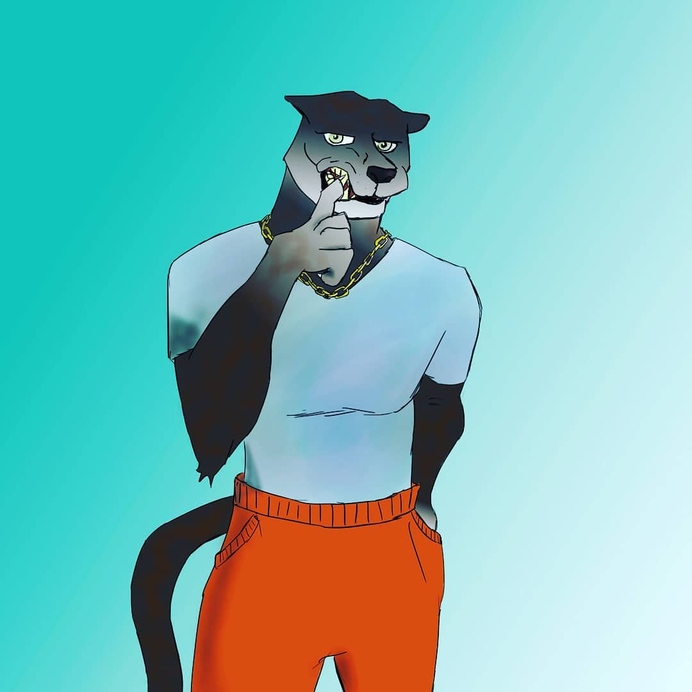
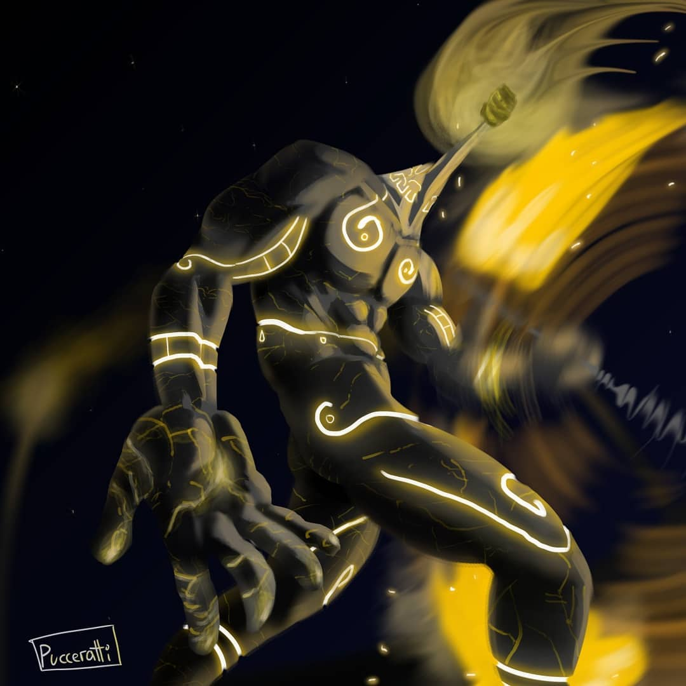
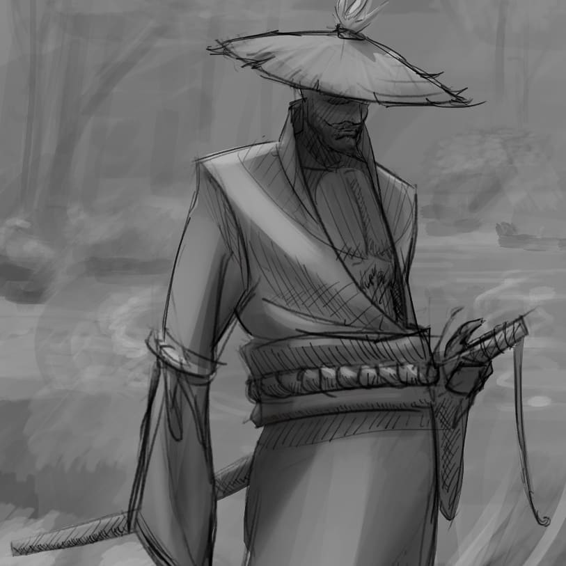

¿Que animal serias?

Emmm, no, no soy furry. La cosa salio en un stream cuando nos preguntabamos que animal seriamos, despues que perro seriamos, y por ultimo que gato seriamos y nada tengo ganas de dibujarlos si es que salen. Tambien tenia pensado hacer uno en conjunto con las elecciones de unos amigos y ver como sale :B
¿Si tu color favorito fuera un personaje, como seria?

Esos colores son los que mas aprecio, ademas de contrastar muy bien me encanta la energia que irradia el amarillo y lo imponente del negro.
Que es lo que resulta? UN MA***O GOLEM ANTORCHA jajaja, nah pense en que estos colores combinados formar algo religioso, asi como lo hace el blanco y dorado, por lo que mi personaje es una invocacion que incita a bailar a sus invitados e invocadores, dancen! Bailen hasta desmayarse y levantarse llenos de energia.
Seinsei

El poco tiempo que estuve me saque las ganas de dibujar algo sobre algo, posta que se sintio muy bien agarrar la tableta despues de LITERAL dos dias, osea teniendo en cuenta de que todos los dias estoy haciendo algo, dos dias me parecio una eternidad.